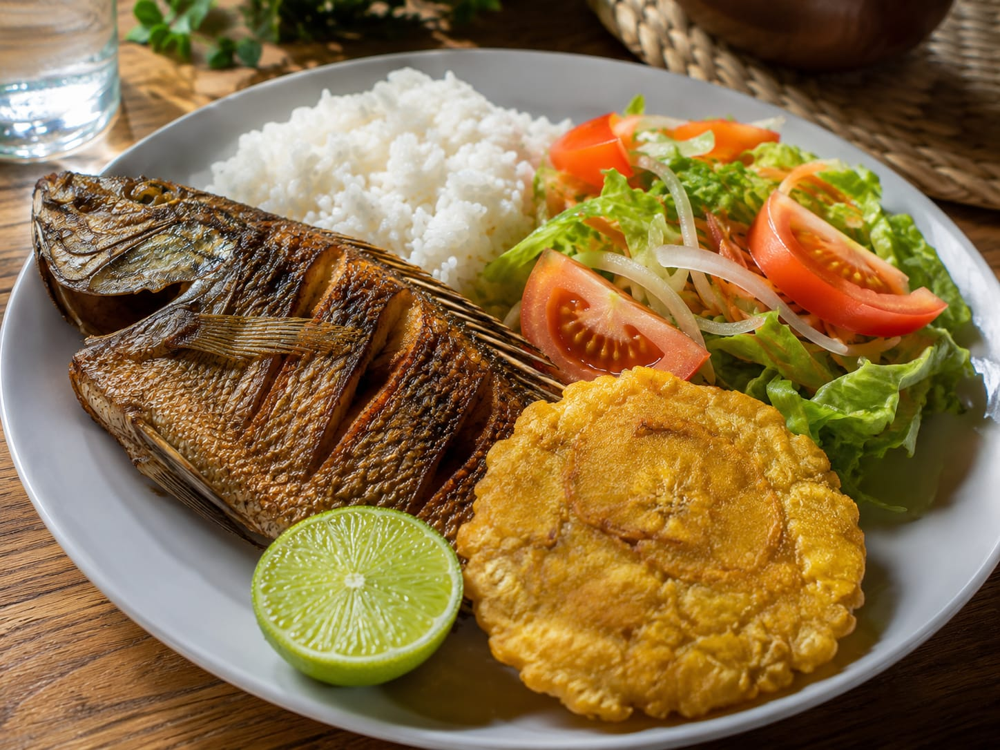
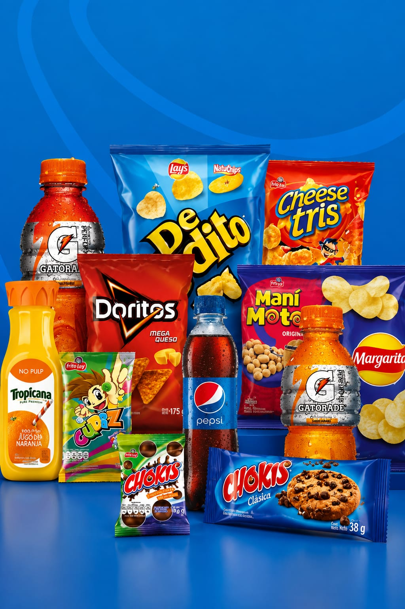

Nuestros Productos

Campan's Café
Café de origen cultivado con dedicación en nuestra finca.

Campan's Miel
Miel 100% natural producida de manera artesanal.

Campan's Pescado
Pescado criado en estanques naturales, fresco y de excelente calidad para ofrecer un sabor auténtico en cada plato.

Almuerzos
Deliciosos platos preparados con ingredientes frescos de nuestra finca.

Mekato y bebidas
Bebidas y snacks para acompañar tu visita y disfrutar de un momento especial.